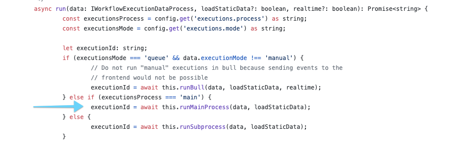
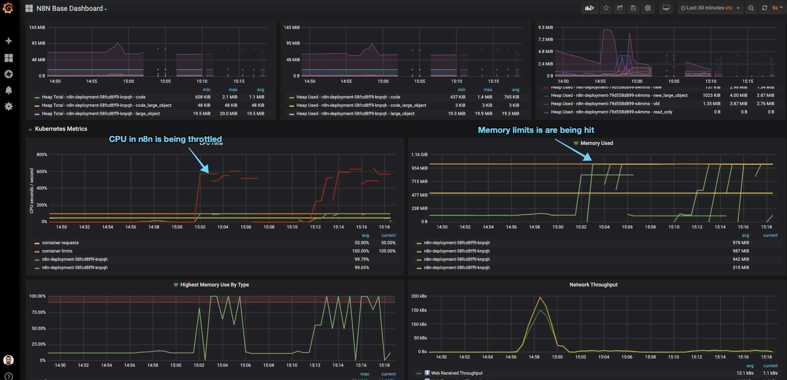

This post is a continuation on “Setup n8n on Kubernetes”, so most of the things we talk here assume that you’ve followed/read this one as well.
After running n8n during a couple of months in production, me and my team realized that the default configuration do not work very well for us.
So here in this post I go over the changes we did to allow n8n to scale and work without problems.
NodeJS default max memory
If you look closely on our resource allocation for our n8n service, you will see that we’ve requested Kubernetes to allocate for us 1Gbi of memory, although we are not using it all yet.
|
|
It seems that NodeJS allocates memory differently, depending on the architecture (source):
- 1Gb of memory if you are on an 64bit architecture,
- and 512mb in a 32bit architecture
To play around with this limit, we’re gonna create a memory intensive workflow and see if n8n can handle it.
A simple Interval + Function workflow will do the trick. Setting up our Interval node to run every 5 seconds, + we can just paste the following code in the Function node, which just generates a big string and reverses it.
|
|
If you look at the container logs, you will see something like: JavaScript heap out of memory.
|
|
As you can see, we never reach the max memory consumed of 1Gbi because NodeJS default max allocated memory is 512mb, on my machine.
To accommodate for heavy memory usage we need to increase the NodeJS default memory and for that we need to add the following configuration to our n8n-confimap.yaml:
|
|
With this change the same workflow now uses much more memory (well it has more available 🙃 ). We still might hit the 1Gbi container threshold which will either:
- Kubernetes container runtime detects the container is allocating more that 1Gbi of memory, killing it with OOMKilled error,
- Or NodeJS raising a Fatal Error since it can’t allocate more memory to create new objects, like the one above.
Well, sometimes you might see some spikes over the 1Gbi limit, but afaik that is prometheus being able to scrape the container right that instant, right before the NodeJS process dies from using more that its default, although I can be wrong.
ℹ️ So, if you want to increase your n8n server available memory, not only you need to increase your container Request/Limits, but also add the --max-old-space-size= environment variable.
n8n Execution Mode
If we want to expose our server to the world, lets say with a dynamic dashboard, and work with it in an production environment, we need to first do some capacity planning and figure out what n8n can serve.
There is a section on n8n documentation about Scaling this service using Redis and a worker pool of n8n workers (source). Although that is a perfectly good solution, thats not the goal of this part of the post. I want to explore how much load this service can handle using the “out of the box” configurations.
The goal here is not to see the result of the workflow but to access:
- How many requests can a simple n8n webhook handle,
- Does it drop any requests and when,
- And if the response times varies to much.
🤔 Keep in mind that these tests were made on my MacBook Pro 13-inch, 2019 with a 2.4 GHz Intel Core i5 and 16 GBs of memory (this one).
The workflow
To test this out, we will create a workflow that exposes a Webhook, does some computations and returns 200 OK. We just need to configure:
- A Webhook node (GET /load-test) to receive the request
- A Function node to simulate some functionality during 5 seconds

The Function node just runs this snippet:
|
|
Setup of the test
With that, we can test our endpoint with hey, which is a simple load generator that you can run on your terminal:
|
|
This will simulate 8 concurrent clients (
-c 8) sending GET requests during 1 minute (-z 1m).
Results
After running our initial load tests in minikube, with one pod running with 1GBi of memory and 1CPU, the main n8n process spans an incredible amount of “WorkerProcesses” (to handle the concurrent workflows) which ends up throttling our CPU and increasing the memory usage until it kills our pod with either OOMKill or unresponsive /healthz probe check.
n8n has a configuration flag (EXECUTIONS_PROCESS) that changes the behavior of triggering its workflows from the main node process to a child process:

More information about
EXECUTIONS_PROCESScan be found here: https://docs.n8n.io/reference/configuration.html#execute-in-same-process. (source of image above)
EXECUTIONS_PROCESS = “own”
The first test was done using n8n forking the execution of workflows into separate processes. (This is the default configuration.)
If we htop in our container, we will see that once we start the load test, the amount of processes on the n8n pod skyrocket 📈. After a couple of seconds, the pod is forced to restart since the CPU limit was reached and the server becomes unresponsive (our /healthz probe is not returning 200 OK anymore).

Our hey test finishes after the 1 minute, but notice the amount of error responses highlighted below:
|
|
EXECUTIONS_PROCESS = “main”
Seeing that the default configuration couldn’t hold multiple concurrent requests, we updated ou n8n-configmap.yaml with the EXECUTIONS_PROCESS=main environment:
|
|
With this flag, n8n will take care of asynchronously handle all the requests without forking each request into a new process, simply sending the request to its worker threads (which by default are 10)
This allows the pod to be able to return a successful “/healthz” response and keep much better CPU utilization between the different cores.

This time, our hey test doesn’t show any error responses:
|
|
ℹ️ So, in conclusion, if your n8n usage follows more on the heavy I/O operations (vs CPU bound, like returning fibonacci sequences) then you want to setup the execution configuration to not fork its main process, using the EXECUTIONS_PROCESS=main.
On n8n community forum there are some good threads explain the rational for this 1, 2
Need more scale? Use Redis.
In the scenario where we have to scale n8n to serve much more traffic/webhooks, we can take advantage of its built-in integration with Redis which the main n8n node (producers) would broadcast all workflow events to a Redis instance (broker) which would then be consumed by n8n worker nodes (consumers).
There is a community thread that introduces this: https://community.n8n.io/t/slow-webhook-response-performance-high-cpu/3314/6
Summary
Well, this has been one of my biggest blogpost series, so far 😁
Writing all of this, along side with the slides, images and examples, took more time that I was hoping but in the end I end up doing these things for myself, and if there’s anyone that can learn or take advantage of these example, thats awesome.
If you find anything that is not correct or if you just have questions about some of my decisions here, feel free ask below or just PM me!
Resources
--max-old-space-sizeflag: https://stackoverflow.com/questions/48387040/how-do-i-determine-the-correct-max-old-space-size-for-node-js/48392705#48392705- NodeJS memory limits: http://www.the-data-wrangler.com/nodejs-memory-limits/
- n8n multiple execution configurations: https://docs.n8n.io/reference/configuration.html#execute-in-same-process
- Handling n8n worker processes https://community.n8n.io/t/handling-of-the-n8n-worker-processes/5213/3
- How to scale your n8n instance: https://www.youtube.com/watch?v=PnoE0xV8BX8
👋